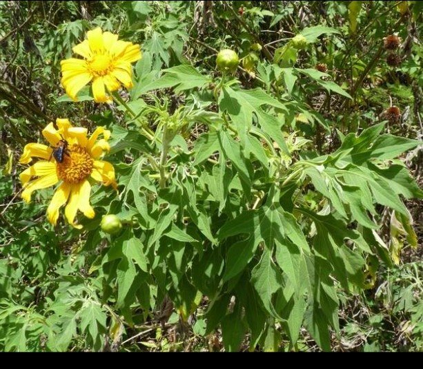

Health
The Yellow Weed with a Hidden Medicinal Potential
Along roadsides, farm boundaries and open fields, a tall plant with bright yellow flowers quietly grows. Many people see it as just another weed, while farmers sometimes remove it from their land. But the Mexican sunflower, known scientifically as Tithonia diversifolia, is attracting the attention of scientists investigating its potential medicinal properties.
Beyond its beauty, the plant has a history of traditional use in different communities. In parts of Kenya, it has been used in herbal preparations for complaints such as stomach pains, constipation and malaria. In Kakamega County, traditional use has also been documented in the management of jigger fleas.
Scientists have become interested in the plant because it contains naturally occurring chemical compounds, including flavonoids, chlorogenic acid and sesquiterpene lactones. These compounds have been investigated for their possible anti-inflammatory, antioxidant, antimicrobial and antimalarial properties.

A scientific review published in 2018 in the Journal of Ethnopharmacology examined 168 studies on the plant, exploring its traditional uses, chemical composition, possible medicinal effects and safety. Some laboratory and animal experiments reported promising findings, including possible effects against inflammation and malaria.
However, the research also raises an important safety concern. A 2013 toxicology study found that certain concentrated extracts could damage the liver and kidneys of laboratory rats when used repeatedly. This shows that a plant's natural origin does not automatically make it safe for human consumption.
In their 2018 review, researchers Alex Mabou Tagne, Franca Marino and Marco Cosentino emphasised the need for further investigation, stating that “more rigorously designed investigations are needed” before the plant or its active compounds can be recommended as medicine.
For communities that depend on traditional herbal knowledge, these findings offer both hope and caution. They demonstrate how familiar plants can provide useful starting points for scientific research. However, promising laboratory results do not mean that Mexican sunflower has been proven to cure malaria, diabetes or other diseases in people.
Researchers still need to establish safe doses, understand possible side effects and conduct more human studies before its medicinal potential can become a reliable treatment.
The Mexican sunflower growing along a roadside or farm boundary, the bright yellow flower may be more than just a weed. It is a reminder that some of the most interesting questions in modern medicine may begin with the plants growing right around us.